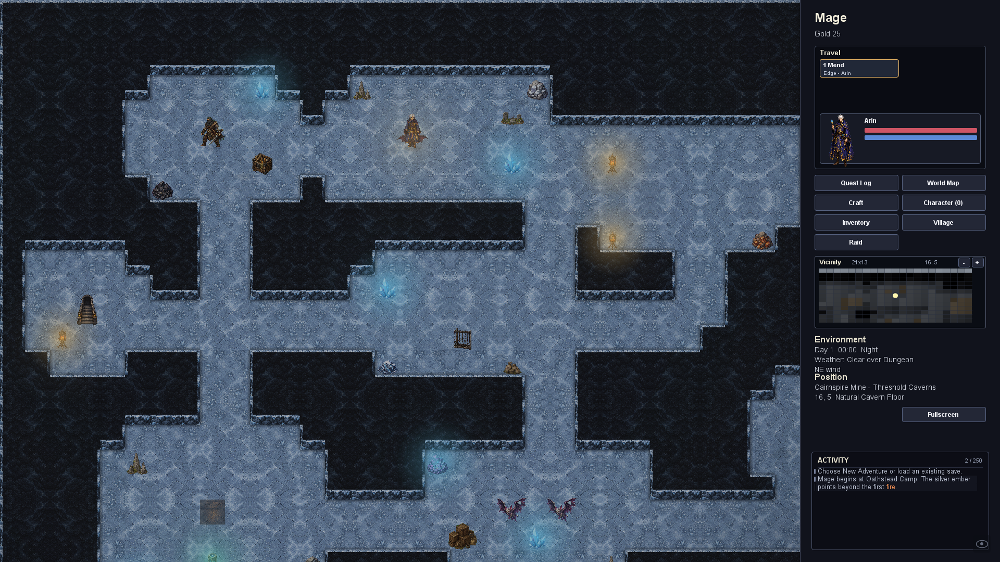
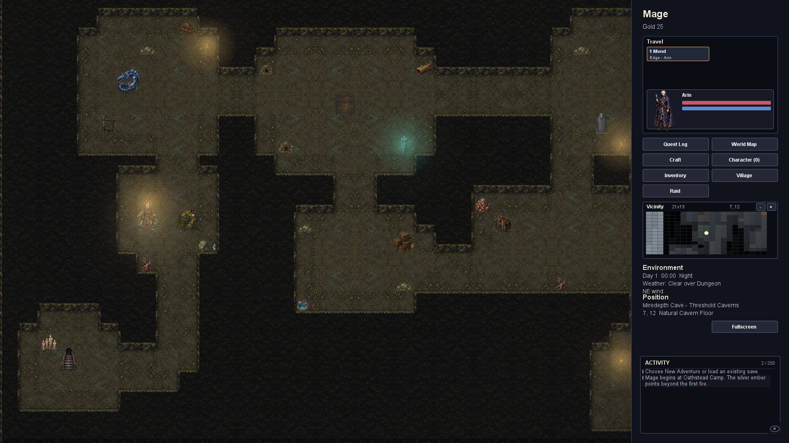
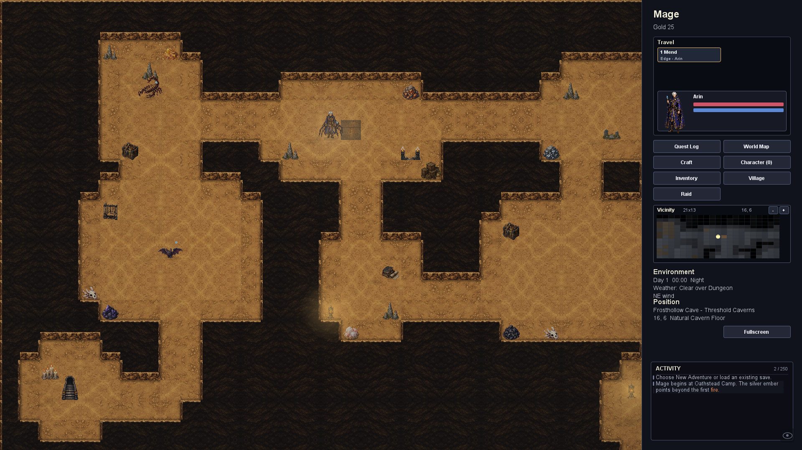
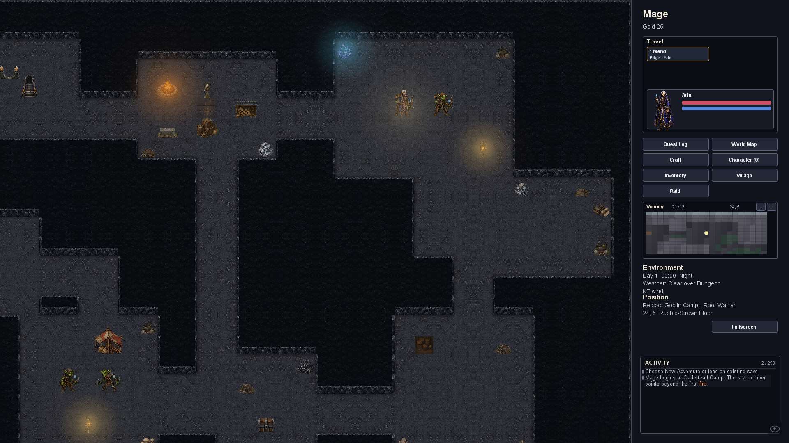

Normal-zoom captures from the game renderer. Continuous floors, dark bedrock masses, shallow exposed walls, and region-specific materials and deposits. Existing routes and collision tiles are preserved.
Population update: six harvestable deposits per floor, up to six additional small themed props, and approximately 11% more monsters across the sampled floors. Deposits use the existing gathering system and sit clear of stairs, routes and encounter positions.


The existing Frosthollow location is placed in Sanctum; materials follow its region and entrance terrain.

